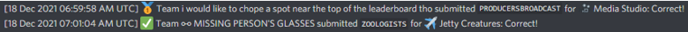
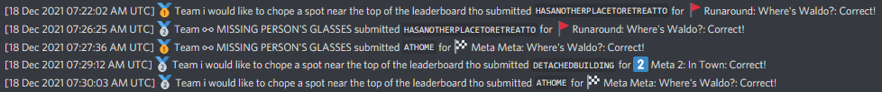
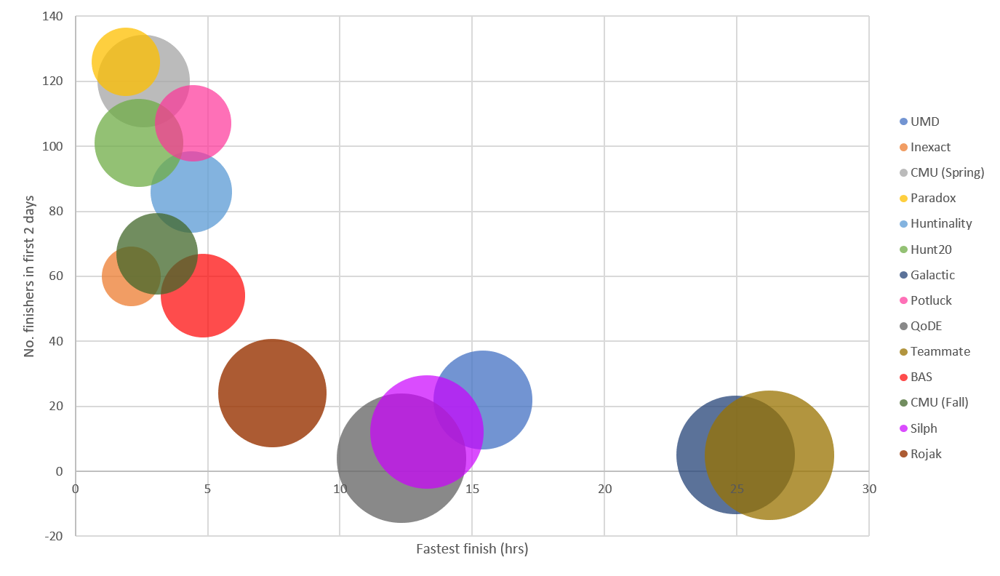
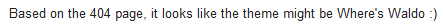
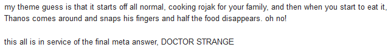
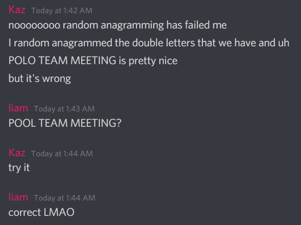

Wrap-Up
Story recap
Writing the hunt
Reflections
Credits
Appendix
Firstly, we would like to congratulate the
- 291 teams who finished at least one puzzle,
- 83 teams who found Waldo,
- 27 teams who solved every puzzle, and
- 24 teams who finished the hunt hintless!
The race to to the finish was incredibly close, with 66 seconds separating the top 2 teams unlocking the metas.
In the end, ⚯ MISSING PERSON'S GLASSES pulled off an incredible come-from-behind victory by under 2.5 minutes!
We also want to give a shoutout to the following teams that finished the hunt without any incorrect guesses or hints!
- 🤏🦙🏬
- Callie's Enterprise
As a new hunt, we weren’t expecting too much in terms of number of sign-ups, especially since we were running our hunt so close to the holiday season and the MIT Mystery Hunt 2022, so thank you to the more than 380 teams who signed up! 😃
Story recap
You and your friends are playing a game of hide-and-seek. After you found most of your friends, you realize there was one missing – Waldo! Being a skillful hider and puzzler, he tells you he WENT BACK TO THREE SCENES from his first book.
Your group of friends go hunting for Waldo. At each scene, you find puzzles waiting for you there as well! After solving enough puzzles associated with each scene, the metas and runaround unlock simultaneously. All three metas look identical, but are actually three variants of interpretation for what “split up into pairs” could mean. In the end, you found that Waldo hid something at the TACO CART, DETACHED BUILDING and POOL TEAM MEETING respectively at the scenes Fairground, In Town and On the Beach.
You visit each of these places, but instead of finding Waldo, you find a segment of a drawing he made, which made you realize that Waldo HAS ANOTHER PLACE TO RETREAT TO. You realize he intends for you to do the metas “another” time and “re-treat” the meta answers with their corresponding extraction mechanisms. Doing so, you eventually find Waldo AT HOME, where he had been awaiting his puzzling (or, should we say, puzzled?) friends.
Writing the hunt
We basically had a team of 2 writing for this hunt, with 3 extra guest writers contributing up to 1 puzzle each. We had 2 main internal testsolvers (1 of whom was also a guest writer) who bore the brunt of our poor puzzle writing, and 2 teams of external testsolvers who helped us polish up rough edges. In total, this hunt took really long to get from conception to realization, taking about 21 months.
Initial conceptualization
We started planning to write our own hunt when the pandemic hit around May 2020 (ever been so bored in lockdown that you decided to write a hunt?), but only internally as a fun mini-event for our team and group of friends. We certainly did not plan to release these puzzles publicly at all. This mini-hunt was initially planned as a single round hunt, with a single meta (which eventually became Fairground) and 8 puzzles. The meta was written June 2020, with the entire first 8 puzzles written by end July. We gave the puzzles to our friends, and the response was good enough that we decided to try writing a full length hunt (since we were still bored in lockdown).
Metas
Coming out of the initial mini-hunt, we had a couple changes to make. The puzzle ideas that survived mostly unscathed from the mini-hunt were Roller Coasters, Merry-Go-Round, Go-Karts, Haunted House, Refreshment Stand and the meta. The remainder were rewritten completely. Since Fairground was a scene in the first Where’s Waldo book, it was natural to look there for inspiration.
Antemeta. In an initial version of the skeletal meta structure, there was an antemeta (meant to be solved only using puzzle names) which required solvers to figure out the three scenes Waldo went back to, and use an A1Z26 extraction to obtain the answer, LAB (indeed, an easter egg (!) which was a relic of a previous version). This was eventually completely nixed due to unfavorable reviews from testsolvers. (More on this & the prepuzzle later.)
Metas. We really wanted to change things up from the metas of other hunts. In particular we were enticed by the idea of having “pure” metas requiring no other input than the answers to the puzzles themselves. Also, we really were shooting for simpler metas, as we did not want teams getting gated by an excessively hard meta. While thinking of ways to expand on the idea of pairs from our mini-hunt, we thought that something simple and interesting enough to be a meta set would be to make the metas “expository” in some way (taking one simple concept and running with it in different ways). Eventually we landed on the idea of doing an “exploration of pairs” – going through three interpretations of what the same flavor text could mean. Given this, we thought if all the flavor texts were going to be the same, why not put all the metas on the same puzzle page, and have it have three answers?! This was implemented for our testsolves but was eventually deemed to be too confusing, so we split up the meta pages instead.
Runaround and Meta Meta. We knew very quickly after setting the meta set that we wanted the meta meta to be a recursive step. The simplicity of the metas meant this worked well as a metameta, and we really liked how our story wrapped everything up very cohesively (you typically wouldn’t be able to do a recursive step on a single answer right?). We finalized a 3-round-with-meta meta structure and confirmed all metas by mid-August 2020. We also really wanted the end of the hunt to contain a callback to Where's Waldo?, and be actually looking for things in a scene. This led to the idea of a runaround with a Waldo-esque picture which would also serve as a cluephrase for the meta meta. The simplicity of this idea was especially appealing as, given also that the metas are easier than is typical for most other hunts, we thought it would be a nice ending to a very grindy feeder round to have a fairly simple, satisfying, and (hopefully) feel-good “victory lap”.
Main round puzzles
We had about 10 puzzles written, when our writing pace dropped off for about 9 months and we revisited the idea in about May 2021, when we decided to seriously finish writing the hunt. We knew early on who we wanted as our target audience – we wanted easier puzzles in the hunt to be suitably challenging for newer teams, and the harder puzzles in the hunt to be suitably challenging for teams with some experience. This was because we projected that many hunts running closer to the end of the year would already either be pretty long and/or have puzzles more suitable for more experienced and competitive teams (Galactic, Teammate and Silph for instance, although QoDE also ended up relatively long).
For our writing process, we tried to use the metas, runaround and metameta to guide us, and ran with whatever first came to mind when we first saw the answer. However, we were restricted in a couple of key ways. The runaround forced us to use the first letters A-Z without repeats. Metas forced us to title puzzles as place names that could reasonably be found in that location (the possibility of the location existing in different metas was not a big deal as associating puzzles to metas was intended to be part of the difficulty). Metas also forced us to use relatively long answers (metas 1 and 2 both required two-word answers, and meta 3 required long enough answers to contain letter pairs). These 3 facts meant that ultimately, while we started writing puzzles that were in general pretty thematic to location and answer, we eventually gave up in favor of puzzle ideas we wanted to write, especially after our initial ideas did not pan out.
In general, our focus was not so much on the difficulty of the hunt but the fun-factor of each puzzle. We wanted each puzzle to be something interesting for newer solvers, and more importantly also not feel like the same formula repeatedly. As with every hunt, we tried to have a variety of topics (Hamming codes to T9 to Mario Kart). In particular, during our writing stage, we made sure to keep track of a “what's interesting” note for each puzzle, to ensure we were thinking about what we wanted solvers to take away from each puzzle. We also tried to have more puzzles contain a “(verb)-ial” aspect to them, to try to get solvers to believe they were doing an actual activity (coloring flags, rotating merry-go-rounds, racing on a track, stepping on arrows in DDR), which would be reminiscent of the story. We hoped these parts of the puzzles would also be fun and interesting for solvers!
We did have to do some balancing later on in the process. Because of how we were writing puzzles, we just wrote based on what inspiration we had based on the puzzle title and answer. However, later on, when In Town only had Media Studio and Sandwich Bar left, we were hesitant about how the entire round was looking a bit difficult – Internet Cafe was research-y into 2 games, School and Nokia Shop both had a key aha right at the start, and Chess Shop was a long slog too – while On the Beach was looking a bit too easy. Given that the wordplay for In Town was the hardest to spot while On the Beach was the easiest, the metas ended up being a little unbalanced. We tried our best to make Internet Cafe and Media Studio more approachable and also moved up meta 2 unlocks to alleviate this. On the bright side, each meta could be solved with about half the puzzles, and testsolvers generally got through them in a short amount of time. We also had to watch the number of logic puzzles we had and the number of puzzles we had relating to video games due to how many of them we were writing. However, each puzzle had its own unique identity, and we are very happy with the variety of puzzles we ended up with.
Unlock structure and hunt policies
Unlock order. Our unlock order was pretty much determined by 1) needing to spread out puzzles from the same meta and which were of similar types (e.g. research-y / wordplay / word searches / grid fills) somewhat evenly, and 2) placing puzzles deemed to be the most straightforward (due to our target of challenging newer teams) and/or teamwork-friendly at the start of the hunt. This was our intention for the first 6-7 puzzles, after which we tried to mix mid-difficulty puzzles with harder and longer puzzles so that solvers would get periods of respite between hard puzzles. For paired unlocks, we paired a harder puzzle with an easier puzzle, and we made sure to drop all puzzles before the metas so that every puzzle had a fair shot at getting forward solved. For teams within our target audience, we wanted finishing the hunt to feel challenging but achievable. This resulted in needing to solve about 3 puzzles a day, and we kept the puzzle windows in mind when we mixed difficulties.
Unlock diameter. We determined unlock diameters at each stage by considering the total number of accessible unlocked puzzles each team would have at each point. Again, we wanted teams generally to always have something to work on, which meant that we wanted at least one easier puzzle in each window, while also expanding the window as time went on to allow for “stuck” puzzles. We felt that the first 5-6 puzzles were all relatively simple, or at least sufficiently so that teams with some hunt experience should not get stuck on them too much. We felt that the first difficulty spike would have been at Merry-Go-Round, which is where we initially planned the first double unlock, and the next difficulty spike at Drop Tower, which is where we planned the next double unlock. (Early on in the hunt, however, it became apparent this needed much tweaking – more on that later.)
Meta sequence. With one single page for all the metas during the testsolve meant that, naturally, all metas had to be unlocked simultaneously. Originally, all three metas had to be solved before the runaround was even unlocked. After testsolving, we decided to unlock the runaround simultaneously with the meta set because our testsolving teams got the meta meta answer even before they fully solved the meta set, and that the general consensus was that the runaround disrupted the “victory lap” feel of the meta sequence. Further, we split up the meta set into three separate pages after testsolving. While this meant it was possible to stagger meta unlocks based on how many puzzles were solved from each meta, we decided to keep to unlocking all of them simultaneously in order to preserve the “exploratory” nature (and, to some extent, shock value) of the meta set (due to the nature of the three metas all taking on the same “personality”). We were well-aware of the trade-off being that the feeder round would feel grindy, but we were okay with that as a result of our philosophy on hunt pacing and aspects that we focused on for the hunt experience.
Starter round. After writing the feeder puzzle round, given the difficulty of the hunt, we seriously considered the possibility of writing a starter round with easier puzzles to have more puzzles catering to new teams. We decided against this for two reasons. Firstly, having 30 puzzles, the hunt was already about as long as we thought reasonable for intermediate teams to solve in 9 days, and so we were not inclined to make it any longer. Secondly, after testsolving, many of our mid-to-hard puzzles were made easier to decrease the overall difficulty of the hunt, which meant more accessible puzzles anyway.
Hint policy. We decided to stick to what most hunts have been doing (2 hints a day). Since the hunt was going to run over the holiday season for the second weekend, we decided that we wanted to release hints after 24 hours rather than the standard 48 hours. This was to be framed as a “surprise” present from Waldo, but was actually a pre-planned hint drop. We also thought this would generally be good for teams who are busy during the weekdays, to allow them to make more progress over the weekend and reduce the amount they would have to do over the week in order to finish the hunt on time. In practice though, we were pretty freely giving out hints to teams who wanted more, and were pretty flexible on hints.
Guess policy. We limited teams to 10 guesses per puzzle. We initially introduced this limit because 1) because we believed our puzzles would not require more than this number for forward solving, and 2) that the answers were non-dictionary enough that we wanted to discourage solvers from WoFing (since it would most likely be unproductive anyway). We were aware that this limit would require solvers to finish more of each puzzle than if they had more guesses, so throughout testsolving, we were very cognizant of validating how true these were. Cluephrases were clearly cluephrases, and answers were either clearly answers or had the word “answer” prepended to the extraction. Answers for the feeder puzzles were constrained by the metas. Further, metas were expected to be solvable by the time they were unlocked. The 10-guess limit was validated by our testsolves, in which testsolvers did not need more than 3 guesses to forward solve any puzzle. In the end, however, this policy seemed to generate lots of discussion. Let us know what you think about the lowered number of guesses having seen the whole hunt!
Hunt philosophy. Our primary philosophy is that in a hunt, the puzzles are what’s meant to be fun, and we would like for teams to enjoy the solving process. We would rather encourage teams to complete more of each puzzle (and in exchange, we were willing to provide more timely and individualized help to each team), rather than teams just short-circuiting and speeding through puzzles. We think there is a competitive aspect to hunts that is pretty motivating in some ways, and so we have kept the global leaderboard (and indeed, the race to the finish was really suspenseful for us as well), but we don’t think this applies as much to our target audience. Hopefully, for a majority of teams, the journey is at least as important as the end result. In that vein, we tried to be as supportive, prompt, and individualized as possible in terms of providing hints.
Testsolving and factchecking
Jon was responsible for coordinating our testsolves with both individual and external teams, compiling feedback and factchecking.
Both rounds of testsolving highlighted that our puzzles were way harder than expected, and several puzzles were nerfed significantly (Battleships, Shallow Waters), and other puzzles were completely rewritten to reduce the difficulty of the hunt.
Our first external testsolve was held on October 10, after Teammate Hunt. This testsolve proved that our hunt was 1) significantly harder than we expected and 2) not as clean as we had hoped. Almost every puzzle had small changes, 4 puzzles were rewritten using the same core idea to fix certain mechanical issues within the puzzle, and 2 were totally rewritten.
Because of the many changes, we held a second external testsolve on November 6 to validate the new solve experience. This second testsolve went slightly better, but we continued to have issues with the difficulty of the hunt, with 3 puzzles needing to be rewritten and most puzzles having edits to reduce the overall difficulty. We were generally alarmed by how our second testsolve by an experienced team still took 48 hours to fully complete every puzzle, and by rewriting 3 harder puzzles to become easy ones, and generally making ahas more approachable across the board, we managed to get the difficulty and length of our hunt way closer to where we had hoped our hunt would be. (This had unintended consequences, though – more on that later.)
After that, every tweaked puzzle individually went through a third round of isolated tests with solo testsolvers to ensure that the changes did not affect the puzzle or its intended difficulty adversely.
After the second testsolve, we were certain that our antemeta idea had to be gotten rid of. However, this got us to think about how else we can link the story back to the first Where's Waldo? book. After much discussion, we settled on having a very simple prepuzzle that would be about the scenes in the book. The prepuzzle was tested by individual testsolvers (who were told this would be the first puzzle to be seen in the hunt) and overall, everyone was able to solve it in the time we hoped, which we had deemed to be 10-15 min. Despite this, we were still wary of gating teams behind the prepuzzle, so we also planned to release a global hint for the prepuzzle half an hour into the hunt which told solvers exactly what to do.
Front-end (infrastructure, art, story)
aki was responsible for setting up the hunt infrastructure, coordinating art requests and writing the story.
Infrastructure. Somewhat unfortunately, I (aki) had to do up the entire website alone. Most of the time was spent typing up all the puzzle pages and solutions. With only a single person to handle all of this, I opted to go for the most basic set-up possible with as little moving parts. I began working on the hunt site on 15 August 2021, and managed to crank out a base version of the site on 30 August by building off the GPH repo (a testament to its ease of use – again, thank you again to GPH for sharing this with the puzzling community!). Furthermore, as we are a team not affiliated with any organization, domain and server hosting were all paid for out of our own pockets.
Art. Since we had no other source of funds, we turned to friends to assist with the art. There are two main pieces of art that had to be drawn from scratch – the Puzzle Rojak logo (created by Kit Chow) and the runaround art (drawn by Spirit). All other “artwork” was assembled using royalty-free art/icons or basic shapes in Powerpoint.
Story timeline. The story was actually written last, after all the puzzles and infrastructure was set up. The story was originally conceptualized and written before our first external testsolve, and we made tweaks and adjustments as our meta structure changed over the course of testsolves. However, most of the content remained intact from the initial write till the start of the hunt.
Story content. Who could possibly resist writing about the pandemic with a final answer like AT HOME? I personally thought it would be a somewhat comedic but also relatable ending to the hunt. Looking for Waldo in the original books was also the inspiration for the start of the story, especially since we were told to go back to his first book. The middle section naturally came together when working inwards from those two premises.
Announcements. I was also responsible for writing the email blasts and announcements. I really enjoyed writing some of these, trying to be thematic to the story and hunt but also the holiday season. I tried to be as heart-warmingly cheesy as possible, and I hope it achieved the desired effect to spread some holiday happiness and cheer!
Hunt operations
As a small team, answering hint requests was a relatively daunting experience. It was made easier by the fact that we are in opposing timezones (Jon and Wilson are in the US and aki is in Singapore). Each of us took approximately 12 hour shifts a day, monitoring hint requests and providing responses as timely as we could (responses slowed down during the weekdays, but generally still were pretty timely). We spent a lot of time tweaking our hints for teams who requested a particular level of directness (from a nudge to a shove) and we hope that these teams generally found our hints to be within the ballpark of what they were expecting.
On the first day, we were both online for the first 12 hours of the hunt. During this time we were monitoring the progress of various teams and the solve stats for each puzzle. When we realized that we misjudged the difficulty of many earlier puzzles as compared to later ones (more on that later), we decided to make tweaks to the diameter. This also confirmed in our mind that releasing hints after 24h was a good idea.
If anyone was wondering why we had an emergency maintenance period on the second day, here's why. Earlier that day, we got an email from Heroku saying that we were approaching our (free) database's row limit. Unfortunately, this meant we had to take the site offline for a couple minutes on the second day of the hunt to upgrade our database to a (paid) plan with more rows. We tried to make the disruption as minimal as possible, and hope no one was affected by this! We did an order-of-magnitude calculation prior to the start of the hunt based on our expected number of teams, and thought we would be well under the limit. We were certainly not prepared for the number of signups after the start of the hunt which resulted in our original database plan being insufficient.
Reflections
Length and difficulty
Coming out of the hunt, we were pretty happy with how the total length and difficulty of the hunt ended up being. This chart (inspired by some other hunts) summarizes the finish stats of some 2021 hunts. From this, hopefully, you appreciate how tough it is to compare our length and difficulty to other hunts: there simply are not many hunts in the middle. We think our overall estimate wasn't too far off – even though our fastest finish was about half that of UMD's, the number of finishers over 2 days was comparable. Mid-to-long hunts tend to be deceptive in terms of their difficulty because the fastest teams to solve are often not very representative of the average team at all, so it is hard to judge length and difficulty in this respect. However, we got a couple comments saying that the UMD comparison was accurate, and we're glad that the comparison helped!
Note: the bubble size indicates the number of puzzles in each hunt.
Stats used to generate the chart
| Hunt | Month | No. puzzles | Fastest finish (hrs) | No. finishers in first 2 days | Total finishers |
| UMD | Jan | 25 | 15.4 | 22 | 88 |
| Inexact | Jan | 9 | 2.12 | 60 | 95 |
| CMU Spring | Apr | 22 | 2.58 | 120 | 120 |
| Paradox | May | 12 | 1.9 | 126 | 126 |
| Huntinality | May | 17 | 4.38 | 86 | 191 |
| Hunt20 | Jul | 20 | 2.4 | 101 | 181 |
| Galactic | Jul | 36 | 24.95 | 5 | 76 |
| Potluck | Aug | 15 | 4.45 | 107 | 234 |
| QoDE | Sep | 43 | 12.32 | 4 | 49 |
| Teammate | Oct | 43 | 26.22 | 5 | 67 |
| Burn After Solving | Oct | 18 | 4.82 | 54 | 138 |
| CMU Fall | Nov | 17 | 3.08 | 67 | 67 |
| Silph | Dec | 33 | 13.28 | 12 | 88 |
| Rojak | Dec | 30 | 7.45 | 24 | 83 |
In general, we find that there are many shorter/easier hunts (clustered around Huntinality in the chart), with the fastest teams solving in approximately 4 hrs or less, and then the longer/harder hunts (anything larger than Silph/QoDE). Where we wanted our hunt to lie was towards the longer side, while still being relatively fair/easy on the ahas for less experienced teams, to allow newer teams a more meaty experience. We think, given that we landed squarely in an unoccupied region of the chart, we managed to achieve this goal and plug this gap.
Additionally, we had more than a handful of post-hunt feedback form responses from teams who mentioned that this was the first hunt that they had finished, that the difficulty was still challenging but doable for them and that they were very excited about it! To those teams: we share in your excitement as well, because it also means we achieved what we had set out to do!
Puzzle balance
Honestly, nothing could have prepared us for what we saw.
- Restaurant proved to be slightly harder than expected, given that we had revised the flavor text many times to bring its difficulty down.
- Sandwich Bar proved to be very difficult, despite it having been ranked as one of the easiest puzzles during testsolving. By the 8th hour, it had 44 solves to Go-Kart's 42 solves, way lagging behind Restaurant's 75 solves and Dock’s 95 solves. From what we saw, the letter banks confused some teams, specifically because we think a lot of teams were fixated on the idea of adding letters rather than removing them. Where teams did use the letter banks, they got confused on where to remove letters from, and we saw teams removing letters from the middle of words.
- Nokia Shop played much harder in testsolving, whereas on day 2 of the hunt it basically had the same number of solves as Restaurant and only less than Dock among other main round puzzles.
- Sea Cave proved harder than expected as well, having short words in the cluephrase, as well as a lack of a clear order was more detrimental than expected.
- School, Swimming Area, and Seashells, all of which required an aha to start, all played way easier than Jetty Creatures did. While we are still unsure why School ended up being so solvable, we suspect tongue twisters weren't as niche as we had expected.
- Under the Shade and Concert Stage generally played easier than expected as well, probably due to crosswords and cryptics being huge favorites of the community as a whole.
Our general consideration when deciding on puzzle unlock order was to ensure that there were easier puzzles for the first third of the hunt, and then intersperse harder and easier puzzles in the later two-thirds. It so happened that many of the later puzzles we thought were harder proved to be easier than expected. All this meant the second half of the hunt played significantly easier than the first half for many teams, even though this was not intentional.
In terms of puzzle difficulty on a hunt level, we think we struck a good balance. Every feeder puzzle was forward solved at least once by the top 3 teams before unlocking the metas (yes, including Chess Shop!). Drop Tower and Chess Shop proved to be difficult, as expected. With the exception of the Prepuzzle, every other puzzle, including Meta 3, runaround and metameta was clued by at least 1 team.
To judge how successful we were regarding fun, we looked more towards the survey responses. We are going to share more generic results here, mainly in case any future hunt creators are interested. For simplicity, average ratings above 5 included Dock and Drop Tower, and those below 3 were Sandwich Bar and Jetty Creatures (these were also the most hinted puzzles). Everything else fell in the 3-5 range (with more being 4.xx), which makes us believe that teams generally enjoyed the puzzles.
Some of our puzzles (e.g. Seashells) were pretty short, and (as with every puzzle) this group of puzzles has its share of detractors. This is very intentional, as we did not want our hunt to get too long, and we shortened many puzzles and saved many other ideas due to not being able to do them justice given our goals for how long our hunt should be. Further, many of the shorter puzzles have been very well received, and we still think that they are interesting (even if not the most interesting).
You can read more about our puzzle-specific reflections in the appendix.
Meta structure
It was inevitable due to the meta structure that we had to drop all 3 metas at once, which is a deviation from the usual intro round + main round structure of hunts. Bucking the trend, of course, means that there will be mixed reactions. The downside was that teams did not get any midpoint morale booster in the way of a meta solve before the end. We tried our best in having some easy puzzles near the front, and staggering shorter puzzles between longer puzzles to give teams more of a breather.
On the bright side, we did have quite a few comments on how they liked the meta sequence, so that was great to hear. Others thought that the meta sequence was too simple for all the work that was done in the feeder round. What was clear was that most teams struggled less on the meta sequence as compared to the main round puzzles, and the meta sequence favored teams who are more comfortable with pure metas. If we do run a next hunt, we may try and re-balance our meta sequence, but we will leave that for next time!
The future
Writing and running this hunt took a lot out of us, especially with only a team of 2 (along with a couple guest writers – our unreserved thanks goes to them!). We don’t think we'll be writing puzzles for a while. If we do decide to write another hunt, it will definitely not run next year (unless we get more people on the team). We also don’t want to commit to anything, so if you do see another Puzzle Rojak, take it as a bonus rather than a given. 😛
There are a couple things we would change if we ran another hunt, such as how we handle hint requests. Also, perhaps we will try to run over summer break instead, when there are less hunts? We are genuinely curious what a good time to run a hunt of our size is though, feel free to let us know your thoughts!
Credits
Organizing team. aki, JonathanPuzzle writers. aki, Jonathan
Guest writers. Teo Xue Heng, Wilson
Internal testsolvers. Spirit, Wilson
External testsolvers. Bob, Celestine, Dawson Do, Grant, Hong Jhun, Joseph, Joshua, Metapzl, Ryan Thomas, Samuel Lam, Tsuki, Yusheng
Art. Kit Chow, Spirit
Infrastructure. aki
The quality of a hunt depends so much on not just puzzle creators, but also testsolvers. We would like to give a special shout-out to our internal testsolvers, who basically testsolved multiple versions of each puzzle and had a very high pain tolerance for poorly written puzzles. In addition, the testsolving teams were very extensive in their testsolving, providing suggestions on how to reduce friction in each puzzle, helping to improve our clues (especially for the word puzzles like Under the Shade and Nokia Shop), and being open to discussing suggestions to improve puzzles constructively. We are really grateful to them. Tsuki saved us during the hunt itself as well, helping suggest a solution to fix an erratum in Chess Shop.
Appendix
Solve stats
Some of the solve times, especially for Haunted House and Go-Karts, were pretty mind-blowing to us.
| Puzzle | Team | Solve time |
| Restaurant | Enticing Cuisine of /r/PictureGame | 7m 19s |
| Dock | i would like to chope a spot near the top of the leaderboard tho | 22m 49s |
| Sandwich Bar | 🦌🦌🐋🐅🦃 | 6m 38s |
| Roller Coasters | 🎏ikanbilis🎏 | 28m 11s |
| Nokia Shop | ⚯ MISSING PERSON'S GLASSES | 15m 45s |
| Go-Karts | Critical | 33m 28s |
| Merry-Go-Round | The Caroline Schism | 18m 27s |
| Sea Cave | ⚯ MISSING PERSON'S GLASSES (Piping Chardinality by 1s!) | 50m 47s |
| Haunted House | i would like to chope a spot near the top of the leaderboard tho | 8m 32s |
| Shallow Waters | ✈️ | 35m 52s |
| Internet Cafe | ☝️☝️☝️ @everyone ☝️☝️☝️ | 13m 11s |
| Drop Tower | Mobius Strippers | 1h 18m 9s |
| Jetty Creatures | Scoobinality Snack | 22m 28s |
| Phone Booth | ☝️☝️☝️ @everyone ☝️☝️☝️ | 21m 19s |
| Battleships | Okay, Look, Fine, Yes, Technically It Is Projectyl | 24m 33s |
| Baywatch | 17th Michelin Star | 14m 53s |
| Animal Show | i would like to chope a spot near the top of the leaderboard tho | 35m 33s |
| Chess Shop | 🦌🦌🐋🐅🦃 | 1h 37m 1s |
| Message in a Bottle | Chardinality | 19m 59s |
| School | 🦌🦌🐋🐅🦃 | 11m 8s |
| Concert Stage | ⚯ MISSING PERSON'S GLASSES | 20m 41s |
| Seashells | ⚯ MISSING PERSON'S GLASSES | 6m 56s |
| Under the Shade | 🦌🦌🐋🐅🦃 | 27m 44s |
| Refreshment Stand | 🦌🦌🐋🐅🦃 | 24m 43s |
| Swimming Area | Chardinality | 8m 36s |
| Media Studio | Chardinality | 26m 14s |
The fastest solves for the meta meta (and of all time, probably) go to:
- Dining Puzzlers Problem (9.3s)
- AMAZON EOTY SHIRAKAMI FUBUKI #1 FAN AGU + friends (10.3s)
- Felonious Ferrets (13.8s)
All three teams solved the meta meta faster than our browsers would probably have taken to navigate to the answer submission page – incredible!
At the top of the wrap-up page, you can also access the finishers' progress charts, bigboard, and puzzle stats.
Favorite wrong answers
Prepuzzle: Where's Waldo?HEISNTHERE – dokidokirojakclub
Restaurant
COCONUTSHRIMP – Who Asked
ORGANICSCROTUM – Browtos
OMICRONCOSTING – e
Dock
REGIONUNUSED – (multiple teams)
Sandwich Bar
TEABAG – (multiple teams)
Roller Coasters
DIVINGPLATFORM – (multiple teams... just about 20 puzzles too early for Swimming Area!)
NONSLIPLETTUCE – Quarantine Decrypters
Go-Karts
DEMOLITIONDERBY – ⚯ MISSING PERSON'S GLASSES (... which is miraculously almost a synonym of the answer)
DRIVERPERSECUTION – PonX
Merry-Go-Round
DANCINGQUEENS – PonX
Haunted House
PHOBOPHOBIA – Jeff’s Jaboticabas
RATIONALFEAR – Puzzlebrains
Shallow Waters
IFYOUSAWTHATIACCIDENTALLYENTEREDTHATINTOINTERNETCAFEYOUDIDNT – Alphabet Soup
IKINDAREGRETUSINGAHINT – PokerFaz
Drop Tower
SOLDERINGPROCESS, followed by SUFFERINGSUCCESS – (multiple backsolving teams)
NOTSCREAMING – Rojak Ravaging Researchers
Phone Booth
OBLIQUEHIPSIZE – Chardinality
ANTIQUEZIPTIES – plugh
AQUICKPEEPLEASE – Les Gaulois
OBLIQUECUPSIZE – Tardynality
Animal Show
RATDEMOCRACY – Alphabet Soup, ManyPinkHats, Mystik Spiral
RATDROPPINGS – The Caroline Schism
RUMREBELLION – Mystik Spiral
ISWALDOTHEMETAPUZZLESINTHISPUZZLEHUNTBECAUSETHEYARENOWHERETOBEFOUNDD – Globe Otters
HONGKONGWRITS – Mortal Wombats
Concert Stage
LESSONBYDIVERSITYJURISDICTION – Puzzling Poop Chamber
HOTTESTPARTY – Twelve Pack
HELPJLENNON – This is not IP I’m familiar with
YEAHYEAHDNA – frumious
Under the Shade
UMBRELLAINSURANCEPOLICY – no gnus is good gnus
Runaround: Where's Waldo?
INTHEOTHERNINESCENES – no gnus is good gnus
INYOURHEART – no gnus is good gnus
WOEISMEEMOJI – e
RIP – e
EVERYONEISASKINGWHEREISWALDOBUTNOBODYEVERASKSHOWISWALDO – frumious
BINGCHILLING – SOY BOYS
Meta Meta: Where's Waldo?
BINGCHILLING – SOY BOYS
INABOOK – JacksonBros
THEGREATRETREAT – Pluru, kcaze
Funny moments
Hint requests. We were very unprepared for how dreary handling hints really is, so any remotely interestingly phrased hint really made our day. Shout-out to all the teams who sent us great hint requests! Here are some of our favorites.
Restaurant (Spin My Hovercraft)
The GIGANTIC amount of PRECIPITATION (or was is perspiration) coming from my forehead after eating all that CHOCOLATE has definitely left me SWEATYThe stretchmarks from chowing down has left an INSIGNIA from all the DESTRUCTION, leaving me looking like a GORILLA.
Now it's time for some RESPITE, cutting down the amount of CHICKEN I have on any given day. I don't have the CHARISMA to BLOSSOM as the PRESENTER of this vacation.
Hopefully, this will ????????? my will to be an INHERITOR.
(But seriously, I don't know if the words are right, and I've tried some that have left me with OCTOPUS GRINCH on extraction. Would love some help.)
Sea Cave (2brokegirlz)
hi therewe have spent the past many mins listening to all the soundtracks at .5 speed and it has been very funny. we have counted the number of times each word has been said per soundtrack bc that is what the flavor text is asking us to do probably. except, for some of the songs the word that is being repeated is cut off in the middle which is v sad and we do not know what to do with that. also we noticed that in the first song at around ~49 seconds there is a "bababy" and we do not know if that counts as 1 or 2 babys. we think it might be a reference to that one song Levitating by Dua Lipa featuring BaBaby HAHAHAH jkjk but actually what is bababy? now we have the number of times each word is repeated per song (kind of) and thought maybe we should index into each respective song and get a word? but how do u do that with kpop? overall we are now stuck pls help thank u
Go-Karts (Spin My Hovercraft)
I started this one full of gleeWasted some time racing on Wii
But that cheerful facade has dropped
After the first stage progress stopped
We know the racers, know the tracks
But every time the puzzle cracks
The stuff we find makes zero sense!
(And, please, to that take no offence)
Found all the racers in the square
We tried to index, tried to Morse
Fixed off-by-ones, that made things worse
(And now we think the thing ain't fair)
The gears in heads like hovercraft must spin
Please send a hint to guide us to this win
I (Jon) was excited to answer hint requests in rhyme. Unfortunately, this was first time I saw it, and it was 1) for the puzzle that was probably the worst to understand the progress in rhyme 2) at a time when new hints had just dropped and I was swamped. I did my best to reply though.
I'll love to craft a longer reply
But right now I'm swamped, I cannot deny.
Not sure how Morse is to be used
That train of thought did have me bemused.
Tough to help without seeing your working sheet,
This puzzle has many components, even though it is pretty neat.
Have you found the messages from the leftover letters in the grid?
Or am I totally misunderstanding your progress, God forbid.
Feel free to follow up, we'll refund it
I'll hope to see the next hint in a bit.
Drop Tower (Stumped and Furious)
Oh Rojak, Oh Rojak, please lend us your ear,We could use some advice on a puzzle so dear.
On the first one, the unfortunate souls all work out,
We could move just 5 letters and we get the right count.
We want to form words that someone would recite,
We’ve got “peach” and “green” and...maybe they’re right?
The other ones have some more letters than squares,
And the reason for that, we are just unawares.
We also have too many extra poor souls,
And this is just not helping us with our goals.
What are the colors? What are they for?
Before we can use them, do we need to do more?
We are clearly missing the overall theme,
Perhaps if we knew that it would all be a dream.
So please, if you have anything to suggest,
All of us trees would be quite impressed!
Team Stumped and Furious also had the most eclectic greetings for us and themselves. Here are some of our favorites:
- Hellloooo salad-composed-of-a-mixture-of-sliced-fruit-and-vegetables-served-with-a-spicy-palm-sugar-dressing conundrum search people
- Hello, Professor Rojak!
- Greetings, fine citizens of Rojak.
- Dear Jakers of Ro,
- Your favorite irate decapitated conifers
- Trees that once were tall and now are not
Theme guesses. Before the hunt, we invited teams to guess the theme. We got a pretty quick and succinct response:
We also had someone take the word “guess” a bit too literally. Hmm...
Funny stories. Thanks also to everyone who shared their funny stories with us in their post-hunt feedback forms! Here are a collection of our favorites.
Weird Lex and the Aladdin Chickenshackers: We finished the cryptic for Under the Shade, but no luck on the extract. We realized the connection between the number of words in the cryptic clue and the surnames. I was planning to nutrimatic, using the surnames as a letter bank. My teammate suggested I just try the first part, and see if I could get anything I could generalize. I think I tried about the first half, and saw ANSWER as a possible starting word. From there, it was extremely easy to generalize, and we got the answer quickly. It was a fun puzzle!
The Puzzledome: We were really, really hyped because we thought 'X and Y announcement' and 'Emerald Diamond' were precursors to a Pokémon meta in a Where's Waldo hunt. I was sad to go to sleep last night in case I missed out on said Pokémon meta. What we got was pretty good though :D
Needlessly Eating Squirrels: we had some mistakes in Refreshment Stand and the recipe that included Fresh Milk was making Milk. we questioned the quality of a recipe that managed to turn Fresh Milk into just Milk.
Stumped and Furious: Our team continued to craft increasingly unhinged hint requests and we were always delighted that The Nice Puzzle Rojak People wrote back in theme. 15/10, A+++
DefaultTeamName: Might I say, the the" Baby-baby- bay - be - bay - be - bay, beeeeeeeee, baaaaaay" motive is stuck with me to this day. ([aki] Oh god.)
Needlessly Eating Squirrels: i think you should have used DDR Mario Mix so everyone would have had to watch mario and his excellent dance moves ([aki] OH GOD.)
The Revenge Of CMU Puzzlehunt: Our solve of the beach meta:
Also my youtube recommendations has lots of DDR now.
PonX: That moment when the author of :handshake: is in our team and we opened Internet Cafe :thonk:
Arithmancers Eating Their Vegetables: We briefly had “a photon” as “article particle”, which I found amusing.
WIT: Amusingly, for the last steps [of Shallow Waters], I read the error bits instead of the corrected bits. So, all the bits were flipped.
I then got the result YSVOOMPPY.
That was the not the answer.
I guess it wasn't ... flip-proof. B)
H2Noregon: can't believe there was a LoL/DOTA puzzle here AND in silph hunt. do you have any idea how many brain cells i lost reading these wikis. please have mercy i don't have many left
Spin My Hovercraft: OMG I was super frustrated cuz I knew the [Animal Show] story and it made me SUPER confused if CA was supposed to be RA and now that we're here. OMG. glad it makes sense. hot damn.
Pain and Suffering: We really thought [Refreshment Stand] was Stardew Valley from the “Can be exchanged for a diamond close to the desert.” clue. Stardew Valley has a vendor that sells Triple Expresso Coffee for a diamond near the desert! Wonder how many other teams fell into this hole. ([aki] You're not the only one! I did not play Stardew Valley, so I apologize about that red herring.)
e: i checked the solution page for [Refreshment Stand] after our team's tragic failure to solve and i'm ngl, being reminded of that side quest from the easter egg has definitely added to my irritation ([aki] Yahaha! You found me!)
Time Vultures: Uuuuh... If [at the Swimming Area] they are lining up, shortest FIRST, then the shortest one should be the farthest away from the starting point, right? Since they were the first to go...
Fxxxx(ruit)king saladmanA: We joked about how Waldo was like that one kid you had during hide-and-seek as a kid that ran to his home to hide. You cheeky b*****d, Waldo :)
One Word Song Challenge
Submissions have been compiled here. We identified what we could identify at a first pass, and we were very impressed by the quality of the submissions we received – we had Chinese and K-pop song submissions, as well as some video submissions despite us not requiring it! Teams can feel free to edit columns C-D (the cells with white background) accordingly – please be nice!
[aki] Listening to these was very therapeutic for me...
Puzzle-specific reflections
We looked at which puzzles received the most hint requests, as well as the feedback we got on individual puzzles. After reading the feedback and survey responses and reflecting on them in totality, here are some thoughts we had (we take your feedback seriously!).
Sandwich Bar (Jon). The addition of the buns proved very controversial. We had many teams reflect that the buns were a red herring or unnecessary. We think they were ultimately necessary, as many other teams used them to remove the letters to figure out the Sandwich aha. Sorry if your team got tripped up by this though!
Merry-Go-Round (aki). As I noted in the solution page, I was fully aware that the extraction was not really that intuitive. In the process of revising this puzzle, we tried to make it more intuitive using more clues in the diagrams below. However, I am happy to discuss the extraction mechanic and/or take suggestions on how it could have been made better!
Sea Cave (Jon). Not having a clear start to the ordering was our fault, and we will definitely ensure a clear start if we ever run another puzzle like this in the future.
Drop Tower (Jon). A late change to this puzzle moved red cells around in the first grid: from mutate and thirteen to by. The rationale was that we wanted the first 2 to be easier to solve directly, to provide an easier in to the puzzle. However, some teams thought the word BY could only be US, and hit a solid brick wall, even if they saw the words “red” or “thirteen”, which was unfortunate. We definitely think the change did decrease the difficulty though. That said, we are very happy that multiple teams commented that this puzzle was indeed, a SUFFERING PROCESS.
Jetty Creatures (Jon). This puzzle in this form could be improved. It ran fine in testsolving, and we were a bit blindsided by how many teams got tripped up by both the aha and the grid fill. We liked the title though, partially because our meta puns were non-existent. We thought the ambiguity was part of the fun for this puzzle, but clearly not having confirmation all the way till the end was a bit too much for most teams.
Animal Show (Jon). We got feedback from a team that they felt this puzzle was culturally insensitive. We are going to address this comment even though the team never replied to our follow up emails. There are many variants to the Great Race, some of them include the Cat. Some stories have it that the Rat never woke the Cat up, and others have it that the Rat shoved the Cat into the river. We think this puzzle simply presents this variant of the story as the wrong one, and we don’t really see anything culturally insensitive, on the contrary, we hope many of our non-chinese speaking friends enjoyed learning about the Chinese Zodiac. Also, both of us (aki and Jon) are ethnically Chinese, and we did not think this was offensive in any way.
Under the Shade (aki). There were mixed reactions to the extraction for this puzzle. Some teams thought that the extraction was “SEVERELY underclued”, while others thought that it was a “mind-blowing moment” and “extremely easy to generalize”. I do not believe that this step was unfair in any way – most teams easily noticed the relationship between the length of the last names and length of the clue, and this should have pointed teams easily to noticing that one word from each clue must be used for extraction. From there, it is a step that requires observation to notice the pattern within the clues. It was intended for solvers to notice the pattern of a single O word in each clue first, before realizing that you could reasonably associate O with golf as a confirmation aha.
Media Studio (Jon). This puzzle relied on a single canonical source, and despite testing with people in both Singapore and USA, we heard midway through the hunt that some puzzlers in Europe had issues getting to the USA Today site. We are really sorry if you faced issues with this puzzle.
Most importantly, thank you to all teams for bearing with us as we navigated our first hunt. We hope everyone had a great time! 😄
Puzzle Rojak bingo
Jon is a fan of Alex Irpan's bingo, so for everyone, here's our creation. Let us know how many bingos and/or squares your team got!
| Got the Internet Café aha and thought of 🤝 | Got the T9 aha for Nokia Shop | Watched at least half the TV shows in Baywatch | Wondered why there was a “DOCK” in Dock | Got the aha for Refreshment Stand by realizing the server was a Korok |
| Found every message in Go-Karts | Knew the meta meta answer without having unlocked it | Forward solved all puzzles | Solved a puzzle in under 5 minutes from unlocking it | Spotted that container was also a kangaroo word in the Restaurant flavortext |
| Bought at least one Where's Waldo? book post-hunt | Had less than 5 incorrect guesses on every puzzle | FREE SQUARE: “This is not a puzzle.” | Had a Sea Cave song stuck in your head while solving it | Spotted the A-Z puzzle answers connection before having unlocked runaround |
| Guessed what the yellow transformation was in Drop Tower before solving the grid | Solved a main round puzzle in under 20 minutes from unlocking it | Had less than 20 incorrect guesses overall | Guessed the Where's Waldo? theme before the hunt started | Used Uxie in some way to solve Merry-Go-Round |
| Spotted that the story in Animal Show had a wrong animal in the second line | Subscribed to at least 1 edutuber featured in School | Knew what Hamming(7,4) was without having to Google it for Shallow Waters | Forward solved Chess Shop | Found easter egg MINE in Roller Coasters |
Q&A
Q: How much did the theme guide decisions about the structure of the hunt?
Jon: In general, I don’t think we were bound too tightly by the theme. For instance, we did not use the original 3 scenes from the book at all. The overall structure looked very different (re: antemeta). The theme definitely played a part in the runaround though, we wanted to recreate part of the fun in finding stuff in a picture, just like in Where's Waldo.
aki: For the puzzles, we tried to base them around locations and what you might do at them, to keep to the theme of going to places to look for Waldo. There was a fair mix of being inspired by the puzzle name or answer, versus having our own inspiration and then fitting it into the name of a location. As for the structure, the Where’s Waldo? concept was generic enough that I was confident I could write a story around any structure we came up with, so that was not too much of a concern.
Q: Do you think you would have done things like the prepuzzle and runaround without the theme?
Jon: Prepuzzle yes, mainly because it was just an incredibly short “round 1” warm up. Runaround maybe not?
aki: I’m kind of the opposite. I don’t think the prepuzzle is necessary, but I do think having a runaround using all the feeder answers in a single puzzle is always fun to recap all the feeders!
Q: What do you think about answer quality? Some people really try to make their puzzle answers be real phrases, but many answers in this hunt were far away from being a “real phrase”. Was it to stop backsolving?).
Jon: I personally think it is more important that the answer be related to the puzzle. For instance, the answer for School is a pretty apt description of the topic, and I’m personally fine with that answer. On the other hand, I really did not like some of the other, more awkward answers, such as the X, B and J answers. For our hunt, these tended to be puzzles with initial ideas that fell through. We did not craft answer quality with backsolving in mind – in fact, we saw some incredible backsolving. Even X managed to be backsolved by a fair number of teams. Not sure if an answer being too thematic is an issue though – at least 3 different teams confessed to using nutrimatic to bypass Roller Coasters and Merry-Go-Round.
aki: Answers need to be words or reasonably grammatical phrases. I’m not particularly bothered by whether they’re real or not. If they can be reasonably misconstrued as cluephrases, an indicator like ANS, ANSWER, or CALL IN should be prepended. Most of our answers were constrained by the meta mechanics, which is fine.
Q: What puzzles went through the most changes from conception to final release?
Jon: A fair number of puzzles would be unrecognizable now as compared to their first iterations. Many ideas were shelved for various reasons, but you might see some of them appear if we ever do run another puzzlehunt.
aki: I have 7 versions of the Concert Stage crossword grid itself still saved on my laptop. This does not include the pre-crossword versions of the puzzle.
Q: Was there any reason for not having round headers for the individual metas, since the puzzle titles made it pretty obvious which ones went in the same scenes anyway?
Jon: It was very intentional. As discussed earlier, the original idea was for all 3 metas to be on the same page and accept 3 answers at once. We wanted the assigning of answers to metas to be part of the process.
aki: The original naming of the puzzles was more ambiguous, and only about three-quarters of each meta could be uniquely assigned, so teams would have to complete the meta assignment via patterns in puzzle answers instead. After testsolving, we modified the names to be more explicit. Despite this, we decided to keep it without round headers because the metas were all pure – if we had explicitly split them into rounds keen solvers would likely see the ahas for the metas before we would have liked them to. Even if it was obvious without round headers, just that small lack of confirmation from the puzzle itself (in this case, hunt structure) is enough to stop solvers from diving down a rabbit hole we don't want them going down. 🙂
Q: I still don't get, when were people supposed to get to the meta puzzle? The site, as of its unlocked state, still contains no metas?
aki: You should be able to see them now. During the hunt itself, teams needed 22 solves (= Prepuzzle + 21 feeder puzzles) to access the metas and the runaround. Solving each part of the meta gave the corresponding third of the runaround image. The meta meta was unlocked when all 3 metas and the runaround had been solved.
Q: Was it intentional that the answer for Message in a Bottle would not Nutrimatic nicely?
aki: No, but I don’t think it matters. In general, we tried to write our puzzles so that the mechanic, rather than the answer itself, would ensure the answer is not nutrimatic-able.
Jon: In general, not at all! We don’t bother with figuring out how nutrimatic-able an answer is, because we don’t really see the point.
Q: How did you feel about Handshake and Internet Cafe having the same premise?
Xue Heng: Honestly, I was pretty upset, because I wanted an original idea that never came out before, so it was a bit unfortunate it got sniped a week before the hunt. I was pretty surprised that no one made a puzzle about that premise yet up to that point, but the execution was slightly different so I guess that’s good!
Q: Your favorite DDR song, or BEMANI in general? Mine's Astrogazer.
aki: Picking one from all the Sota F. songs? Impossible! But if I had to, I would probably say Magnetic was my favorite. Also, special mention to AI, which deserves a better chart! Other favorites include Khamen Break, 海神 and Come to Life. For BEMANI in general, almost definitely 竹 from SDVX (DDR crossover when 🥺) – the rhythms are wild, the tune is catchy and the entire premise of the song is hilarious. Runner-up would go to 灼熱 Pt.2 Long Train Running, but that was recently crossover-ed into DDR – hooray for that!
Q: What is your favorite one-word song?
aki: I would probably say 打打打打打打打打打打 (surprise surprise, it's also from DDR A!).
Jon: If I had to pick out of all the submissions, probably supercalifragilisticexpialidocious?
Q: Is there any way I can stay in the loop about future puzzle hunts?
aki & Jon: http://puzzlehuntcalendar.com/ is a great way!
Q: Does Rojak come into play at any point of the hunt?
Jon: Nope, that's just our hunt name.
aki: Actually, I would argue that it did, just because we like Rojak! 😃